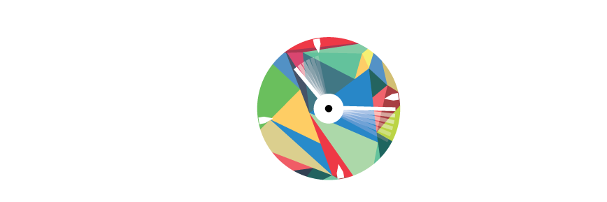

Conventions
- Prototypes dans le dossier tests/
- Libraires dans le dossier code/
- Fichiers source dans data/
- Fichiers source vidéos dans data/videos/
Compiler et éxecuter
- Placer les PNGs de vidéos dans le dossier data/pngs/
Colaborating
Afin d'utiliser le repository, vous pouvez utiliser Github for Windows ou Github for Mac